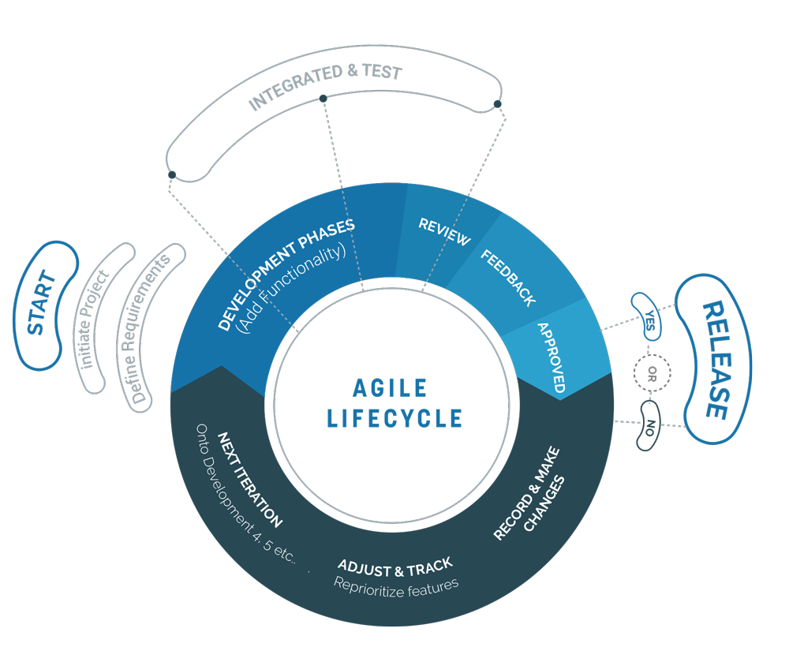

Our team is focuesd with a purpose & we believe in delivery right,the first time. we are committed with you on an ongoing basis even after the product is delivered. we have a prompt mechanism in place to ensure we are not missing on any of our client's query.

"The only way to do great work,
is to love what you do
WHY OUR COMPANY
Pronto strongly believes in providing the best services to the clients when it comes to offer varied business requirements. The team focuses on being creative in every aspect and hitting the target right way. We implement standard strategy to render effective solution to your business. Our sure shot hit strategies mark the best services we have offered to the clients till now. Your vision is our responsibility! Not only it’s our reverence to work on the projects but we treat your dream business as our own accountability. Our esteemed services are tailor-made, rigorously focusing on agile methodology. We not only work for setting up the initial stage but also help growing the business.
BLOCK CHAIN DEVELOPMENT
Our team of blockchain researchers are helping clients leverage the strength of blockchain technology for their business. We work on innovative tech solutions to manage decentralized applications. We consult & develop cryptocurrency wallets & exchanges where one can buy/sell, send/receive crypto currencies from external exchanges. We specialise in reviewing your current business transactions & suggest blockchain based solutions to store your data securely in a distributed manner. During our 4 year long stint, we at Pronto It Labs we have developed distributed ledger platforms based on Ethereum to implement smart contracts & automate enforcement.
HEALTH CARE
We have acquired a vast health-care domain knowledge & have crafted related Web & Mobile applications. We make custom healthcare applications and also provide with web development and marketing for the patients to reach to you easily. At pronto we make sure to provide the customer with ease and convenience. The mobile applications that we build are for both android and iOS. Our work is based on the trust and credibility that we present to our customers.
EDUCATION
Yes, we are here too! We have a structured plan for your e-learning portal targeted towards schools, training institutes and other education establishments. Our innovative and interactive solutions for schools and students are created for all platform. We make sure to offer interactive classroom technology in India by scalable and affordable web solutions.
FINTECH
Keeping in mind the effective role of financial subjectivity in betterment of economy of our country, we make sure to extend our services to the financial sector. Finance is one such sector which seems to be more vulnerable to disruption by software and keeping in mind the security and safety of the projects it is our responsibility to provide solutions which improves the financial activities for your web solutions.
E-COMMERCE
Our agenda is to empower startups to be more methodical & deliver solutions at every stage of their development. We tend to offer end to end services which clearly defines modernity and cost-efficient e-commerce products. We provide web solutions that are search engine and social media friendly. We not only help in the setup but also deliver search engine optimization service and create your social media presence.
LOGISTICS MANAGEMENT
We are working with the best in the industry & have developed custom solutions to manage their warehouses & logistics.
CRYPTOCURRENCY EXPERTISE
We specialize in delivering enterprise cryptocurrency, blockchain ledger technologies & wallet services. Pronto today proudly assists leading crypto exchanges across the globe. We provide strong cryptocurrency technology and data that seems more reliable and accessible. Our outrageous blockchain technologies can be used to design and develop solutions at it’s best.
BIG DATA
We are working on technologies like spark, druid and kafka to provide seamless data analytics to our clients. Our hardworking team force makes it possible to modernize architecture and analytics of your business at competitive and reduced costs. We have experiences and dealt with a diverse range of Big Data challenges. Based on the client’s need and requirement we build our strategies and make sure to work accordingly.
AWARD WINNING
75
HAPPY CLIENTS
120
PROJECT DONE
80
HOURS OF CODE
750

Agile Methology
Agile is the leading methodology in providing better outcomes to the web solutions. Agile methodology breaks down larger projects into small, manageable chunks and we at pronto makes sure to follow the same methodology for all our products. This methodology is not only awesome in terms of outcome of the product but also helps the client to monitor the work time to time. Unlike the traditional waterfall projects, it makes it easy to prioritize and add or drop features mid project. Our highest priority is to satisfy the customer through early and continuous delivery of valuable software. Agile methodology tends to make the project more flexible and cost control. This way of proceeding offers transparency and trust amongst our valuable clients. Starting from planning, execution, review and ultimately repeat, we do it all as per the methodology. The projects are broken down into small and consistent time intervals which tend to make the outcomes more productive. Agile has come up to be the best process to manage projects and and software developments and we make it our priority to be agile in both our work and the outcomes.
Career
support@prontoitlabs.com


Open Position in Pronto IT Labs
Copyright 2018 by Pronto It Labs.All Rights Reserved